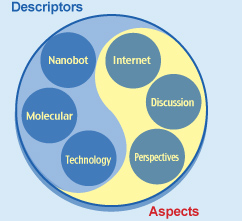

How We Do This
The leading search engines are quite good in finding the best 1000 or so documents that match a user’s query, but this is a half-baked result. AuthorWeb analyzes these pre-selected documents, determines the intended aim of the user, picks the most relevant fragments in the documents (e.g., 10 or 20) that meet the intended aim of the search and presents the fragments to the user in the descending order of relevance (relevance is calculated as a combined function.
Our presumption is that a thought is the atom of interaction, which is contained in fragments (paragraphs, sentences etc).We developed an effective way to retrieve relevant fragments based on semantic layers that we discovered in texts. Some layers relate to the topic of the text, others relate to the purpose for which the text is useful etc.
Our technology retrieves fragments that contain required thoughts and ideas and relate to the intended aim of the user. Thus the number of retrieved documents is radically reduced and the user has immediate access to the required information.
AuthorWeb enables users to browse many bits of information from different sources to compile reports and presentations, analyze markets and trends, formulate recommendations etc. For example, if an analyst needs to compile a report on Australian wheat futures, our system will facilitate her task by offering logical sections/subtopics for her report (say, risks, forecasts and conclusion). Moreover, the analyst could ask one of her colleagues to compile the section on risks, and the system will offer subsections (e.g., analysis, evaluation and management). The resulting report will be coherent despite versatile sources and multiple authors.